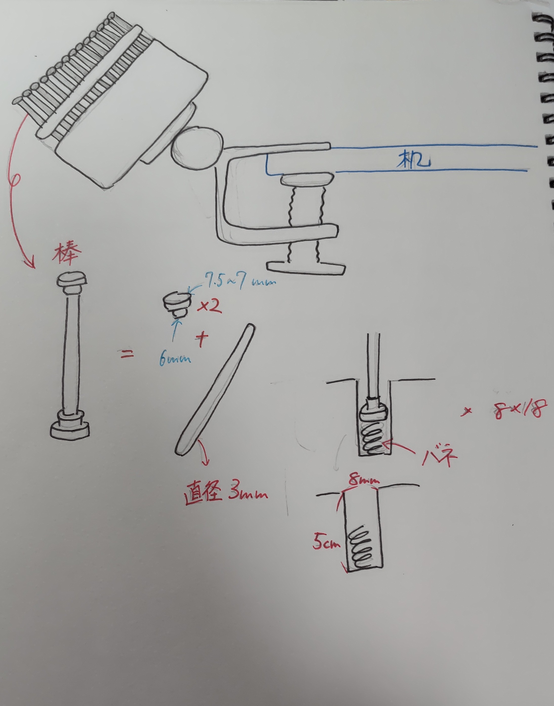

Desighn for others
自分が授業中に眠くなってしまい、授業中に寝てしまったことはみんな一度は経験したことがあると思う。
しかし、教授にとっては自分の授業中に寝てしまうことに対して、良い印象を抱く人はいないだろう。そこで私は、授業中に気持ちよく寝れて、かつ
教授に寝ていることをばれにくくする道具を作ろうと考えた。
寝ていることがばれる原因の一つに身体の揺れがあると考える。人によっては眠り始めると、身体が前後に動き始める人がいる。
だんだん身体が前になっていき、最終的に頭が机にぶつかり起きる。という光景をよく目にする。そこで、この揺れをなくす道具を作ればいいのではないかと考えた。

このように机に固定して、身体を支える物を作ろうとした。体に接触する部分はどんな形の身体にもフィットするように、ピンアートの原理を使用した。
しかし、用意する部品が多くまだ完成していないため、最終課題に持ち越す。